In this notebook, we analyze the BACE enyzme and build machine learning
models for predicting the Ki of ligands to the protein. We will use the
deepchem library to load this data into memory, split into
train/test/validation folds, build and cross-validate models, and report
statistics.
%load_ext autoreload
%autoreload 2
%pdb off
Automatic pdb calling has been turned OFF
import os
import sys
import deepchem as dc
from deepchem.utils.save import load_from_disk
current_dir = os.path.dirname(os.path.realpath("__file__"))
dc.utils.download_url("https://s3-us-west-1.amazonaws.com/deepchem.io/datasets/desc_canvas_aug30.csv",
current_dir)
dataset_file = "desc_canvas_aug30.csv"
dataset = load_from_disk(dataset_file)
num_display=10
pretty_columns = (
"[" + ",".join(["'%s'" % column for column in dataset.columns.values[:num_display]])
+ ",...]")
dc.utils.download_url("https://s3-us-west-1.amazonaws.com/deepchem.io/datasets/crystal_desc_canvas_aug30.csv",
current_dir)
crystal_dataset_file = "crystal_desc_canvas_aug30.csv"
crystal_dataset = load_from_disk(crystal_dataset_file)
print("Columns of dataset: %s" % pretty_columns)
print("Number of examples in dataset: %s" % str(dataset.shape[0]))
print("Number of examples in crystal dataset: %s" % str(crystal_dataset.shape[0]))
Columns of dataset: ['mol','CID','Class','Model','pIC50','MW','AlogP','HBA','HBD','RB',...]
Number of examples in dataset: 1522
Number of examples in crystal dataset: 25
To gain a visual understanding of compounds in our dataset, let’s draw them using rdkit. We define a couple of helper functions to get started.
import tempfile
from rdkit import Chem
from rdkit.Chem import Draw
from itertools import islice
from IPython.display import Image, display, HTML
def display_images(filenames):
"""Helper to pretty-print images."""
for filename in filenames:
display(Image(filename))
def mols_to_pngs(mols, basename="test"):
"""Helper to write RDKit mols to png files."""
filenames = []
for i, mol in enumerate(mols):
filename = "BACE_%s%d.png" % (basename, i)
Draw.MolToFile(mol, filename)
filenames.append(filename)
return filenames
Now, we display a compound from the dataset. Note the complex ring structures and polar structures.
num_to_display = 12
molecules = []
for _, data in islice(dataset.iterrows(), num_to_display):
molecules.append(Chem.MolFromSmiles(data["mol"]))
display_images(mols_to_pngs(molecules, basename="dataset"))
 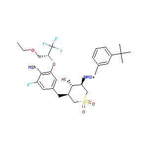
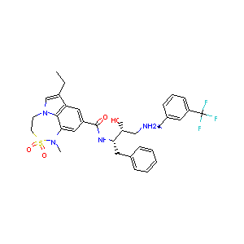
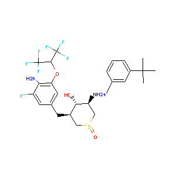
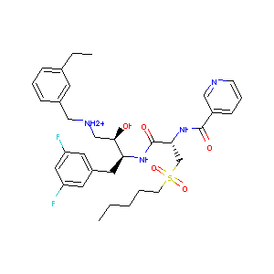
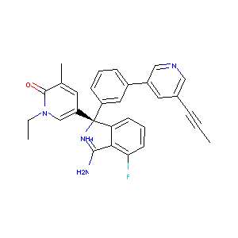
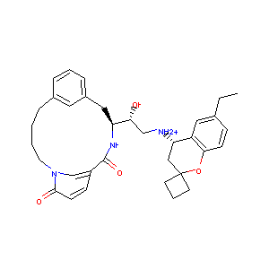
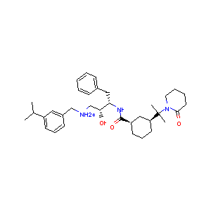
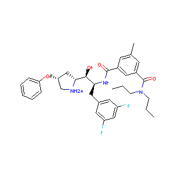
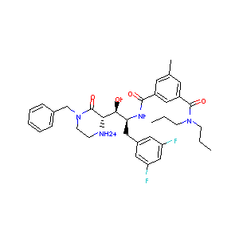
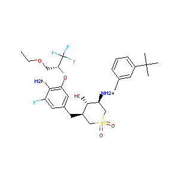
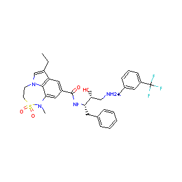
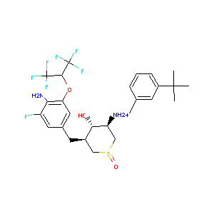
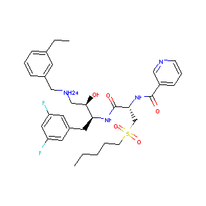
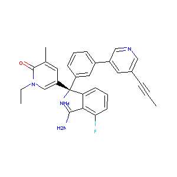
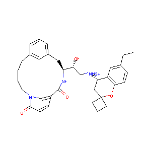
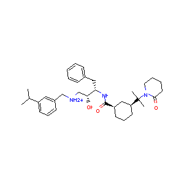
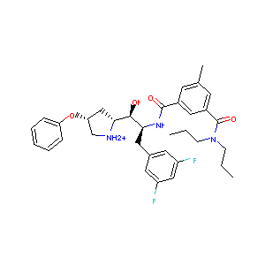
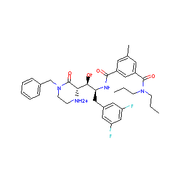
Now let’s picture the compounds in the crystal structure collection
num_to_display = 12
molecules = []
for _, data in islice(crystal_dataset.iterrows(), num_to_display):
molecules.append(Chem.MolFromSmiles(data["mol"]))
display_images(mols_to_pngs(molecules, basename="crystal_dataset"))
Analyzing the distribution of pIC50 values in the dataset gives us a nice spread.
%matplotlib inline
import matplotlib
import numpy as np
import matplotlib.pyplot as plt
pIC50s = np.array(dataset["pIC50"])
# Remove some dirty data from the dataset
pIC50s = [pIC50 for pIC50 in pIC50s if pIC50 != '']
n, bins, patches = plt.hist(pIC50s, 50, facecolor='green', alpha=0.75)
plt.xlabel('Measured pIC50')
plt.ylabel('Number of compounds')
plt.title(r'Histogram of pIC50 Values')
plt.grid(True)
plt.show()
We now featurize the data using the Canvas samples. To do so, we must specify the columns in the data input that correspond to the features. (Note that CanvasUID is excluded!)
user_specified_features = ['MW','AlogP','HBA','HBD','RB','HeavyAtomCount','ChiralCenterCount','ChiralCenterCountAllPossible','RingCount','PSA','Estate','MR','Polar','sLi_Key','ssBe_Key','ssssBem_Key','sBH2_Key','ssBH_Key','sssB_Key','ssssBm_Key','sCH3_Key','dCH2_Key','ssCH2_Key','tCH_Key','dsCH_Key','aaCH_Key','sssCH_Key','ddC_Key','tsC_Key','dssC_Key','aasC_Key','aaaC_Key','ssssC_Key','sNH3_Key','sNH2_Key','ssNH2_Key','dNH_Key','ssNH_Key','aaNH_Key','tN_Key','sssNH_Key','dsN_Key','aaN_Key','sssN_Key','ddsN_Key','aasN_Key','ssssN_Key','daaN_Key','sOH_Key','dO_Key','ssO_Key','aaO_Key','aOm_Key','sOm_Key','sF_Key','sSiH3_Key','ssSiH2_Key','sssSiH_Key','ssssSi_Key','sPH2_Key','ssPH_Key','sssP_Key','dsssP_Key','ddsP_Key','sssssP_Key','sSH_Key','dS_Key','ssS_Key','aaS_Key','dssS_Key','ddssS_Key','ssssssS_Key','Sm_Key','sCl_Key','sGeH3_Key','ssGeH2_Key','sssGeH_Key','ssssGe_Key','sAsH2_Key','ssAsH_Key','sssAs_Key','dsssAs_Key','ddsAs_Key','sssssAs_Key','sSeH_Key','dSe_Key','ssSe_Key','aaSe_Key','dssSe_Key','ssssssSe_Key','ddssSe_Key','sBr_Key','sSnH3_Key','ssSnH2_Key','sssSnH_Key','ssssSn_Key','sI_Key','sPbH3_Key','ssPbH2_Key','sssPbH_Key','ssssPb_Key','sLi_Cnt','ssBe_Cnt','ssssBem_Cnt','sBH2_Cnt','ssBH_Cnt','sssB_Cnt','ssssBm_Cnt','sCH3_Cnt','dCH2_Cnt','ssCH2_Cnt','tCH_Cnt','dsCH_Cnt','aaCH_Cnt','sssCH_Cnt','ddC_Cnt','tsC_Cnt','dssC_Cnt','aasC_Cnt','aaaC_Cnt','ssssC_Cnt','sNH3_Cnt','sNH2_Cnt','ssNH2_Cnt','dNH_Cnt','ssNH_Cnt','aaNH_Cnt','tN_Cnt','sssNH_Cnt','dsN_Cnt','aaN_Cnt','sssN_Cnt','ddsN_Cnt','aasN_Cnt','ssssN_Cnt','daaN_Cnt','sOH_Cnt','dO_Cnt','ssO_Cnt','aaO_Cnt','aOm_Cnt','sOm_Cnt','sF_Cnt','sSiH3_Cnt','ssSiH2_Cnt','sssSiH_Cnt','ssssSi_Cnt','sPH2_Cnt','ssPH_Cnt','sssP_Cnt','dsssP_Cnt','ddsP_Cnt','sssssP_Cnt','sSH_Cnt','dS_Cnt','ssS_Cnt','aaS_Cnt','dssS_Cnt','ddssS_Cnt','ssssssS_Cnt','Sm_Cnt','sCl_Cnt','sGeH3_Cnt','ssGeH2_Cnt','sssGeH_Cnt','ssssGe_Cnt','sAsH2_Cnt','ssAsH_Cnt','sssAs_Cnt','dsssAs_Cnt','ddsAs_Cnt','sssssAs_Cnt','sSeH_Cnt','dSe_Cnt','ssSe_Cnt','aaSe_Cnt','dssSe_Cnt','ssssssSe_Cnt','ddssSe_Cnt','sBr_Cnt','sSnH3_Cnt','ssSnH2_Cnt','sssSnH_Cnt','ssssSn_Cnt','sI_Cnt','sPbH3_Cnt','ssPbH2_Cnt','sssPbH_Cnt','ssssPb_Cnt','sLi_Sum','ssBe_Sum','ssssBem_Sum','sBH2_Sum','ssBH_Sum','sssB_Sum','ssssBm_Sum','sCH3_Sum','dCH2_Sum','ssCH2_Sum','tCH_Sum','dsCH_Sum','aaCH_Sum','sssCH_Sum','ddC_Sum','tsC_Sum','dssC_Sum','aasC_Sum','aaaC_Sum','ssssC_Sum','sNH3_Sum','sNH2_Sum','ssNH2_Sum','dNH_Sum','ssNH_Sum','aaNH_Sum','tN_Sum','sssNH_Sum','dsN_Sum','aaN_Sum','sssN_Sum','ddsN_Sum','aasN_Sum','ssssN_Sum','daaN_Sum','sOH_Sum','dO_Sum','ssO_Sum','aaO_Sum','aOm_Sum','sOm_Sum','sF_Sum','sSiH3_Sum','ssSiH2_Sum','sssSiH_Sum','ssssSi_Sum','sPH2_Sum','ssPH_Sum','sssP_Sum','dsssP_Sum','ddsP_Sum','sssssP_Sum','sSH_Sum','dS_Sum','ssS_Sum','aaS_Sum','dssS_Sum','ddssS_Sum','ssssssS_Sum','Sm_Sum','sCl_Sum','sGeH3_Sum','ssGeH2_Sum','sssGeH_Sum','ssssGe_Sum','sAsH2_Sum','ssAsH_Sum','sssAs_Sum','dsssAs_Sum','ddsAs_Sum','sssssAs_Sum','sSeH_Sum','dSe_Sum','ssSe_Sum','aaSe_Sum','dssSe_Sum','ssssssSe_Sum','ddssSe_Sum','sBr_Sum','sSnH3_Sum','ssSnH2_Sum','sssSnH_Sum','ssssSn_Sum','sI_Sum','sPbH3_Sum','ssPbH2_Sum','sssPbH_Sum','ssssPb_Sum','sLi_Avg','ssBe_Avg','ssssBem_Avg','sBH2_Avg','ssBH_Avg','sssB_Avg','ssssBm_Avg','sCH3_Avg','dCH2_Avg','ssCH2_Avg','tCH_Avg','dsCH_Avg','aaCH_Avg','sssCH_Avg','ddC_Avg','tsC_Avg','dssC_Avg','aasC_Avg','aaaC_Avg','ssssC_Avg','sNH3_Avg','sNH2_Avg','ssNH2_Avg','dNH_Avg','ssNH_Avg','aaNH_Avg','tN_Avg','sssNH_Avg','dsN_Avg','aaN_Avg','sssN_Avg','ddsN_Avg','aasN_Avg','ssssN_Avg','daaN_Avg','sOH_Avg','dO_Avg','ssO_Avg','aaO_Avg','aOm_Avg','sOm_Avg','sF_Avg','sSiH3_Avg','ssSiH2_Avg','sssSiH_Avg','ssssSi_Avg','sPH2_Avg','ssPH_Avg','sssP_Avg','dsssP_Avg','ddsP_Avg','sssssP_Avg','sSH_Avg','dS_Avg','ssS_Avg','aaS_Avg','dssS_Avg','ddssS_Avg','ssssssS_Avg','Sm_Avg','sCl_Avg','sGeH3_Avg','ssGeH2_Avg','sssGeH_Avg','ssssGe_Avg','sAsH2_Avg','ssAsH_Avg','sssAs_Avg','dsssAs_Avg','ddsAs_Avg','sssssAs_Avg','sSeH_Avg','dSe_Avg','ssSe_Avg','aaSe_Avg','dssSe_Avg','ssssssSe_Avg','ddssSe_Avg','sBr_Avg','sSnH3_Avg','ssSnH2_Avg','sssSnH_Avg','ssssSn_Avg','sI_Avg','sPbH3_Avg','ssPbH2_Avg','sssPbH_Avg','ssssPb_Avg','First Zagreb (ZM1)','First Zagreb index by valence vertex degrees (ZM1V)','Second Zagreb (ZM2)','Second Zagreb index by valence vertex degrees (ZM2V)','Polarity (Pol)','Narumi Simple Topological (NST)','Narumi Harmonic Topological (NHT)','Narumi Geometric Topological (NGT)','Total structure connectivity (TSC)','Wiener (W)','Mean Wiener (MW)','Xu (Xu)','Quadratic (QIndex)','Radial centric (RC)','Mean Square Distance Balaban (MSDB)','Superpendentic (SP)','Harary (Har)','Log of product of row sums (LPRS)','Pogliani (Pog)','Schultz Molecular Topological (SMT)','Schultz Molecular Topological by valence vertex degrees (SMTV)','Mean Distance Degree Deviation (MDDD)','Ramification (Ram)','Gutman Molecular Topological (GMT)','Gutman MTI by valence vertex degrees (GMTV)','Average vertex distance degree (AVDD)','Unipolarity (UP)','Centralization (CENT)','Variation (VAR)','Molecular electrotopological variation (MEV)','Maximal electrotopological positive variation (MEPV)','Maximal electrotopological negative variation (MENV)','Eccentric connectivity (ECCc)','Eccentricity (ECC)','Average eccentricity (AECC)','Eccentric (DECC)','Valence connectivity index chi-0 (vX0)','Valence connectivity index chi-1 (vX1)','Valence connectivity index chi-2 (vX2)','Valence connectivity index chi-3 (vX3)','Valence connectivity index chi-4 (vX4)','Valence connectivity index chi-5 (vX5)','Average valence connectivity index chi-0 (AvX0)','Average valence connectivity index chi-1 (AvX1)','Average valence connectivity index chi-2 (AvX2)','Average valence connectivity index chi-3 (AvX3)','Average valence connectivity index chi-4 (AvX4)','Average valence connectivity index chi-5 (AvX5)','Quasi Wiener (QW)','First Mohar (FM)','Second Mohar (SM)','Spanning tree number (STN)','Kier benzene-likeliness index (KBLI)','Topological charge index of order 1 (TCI1)','Topological charge index of order 2 (TCI2)','Topological charge index of order 3 (TCI3)','Topological charge index of order 4 (TCI4)','Topological charge index of order 5 (TCI5)','Topological charge index of order 6 (TCI6)','Topological charge index of order 7 (TCI7)','Topological charge index of order 8 (TCI8)','Topological charge index of order 9 (TCI9)','Topological charge index of order 10 (TCI10)','Mean topological charge index of order 1 (MTCI1)','Mean topological charge index of order 2 (MTCI2)','Mean topological charge index of order 3 (MTCI3)','Mean topological charge index of order 4 (MTCI4)','Mean topological charge index of order 5 (MTCI5)','Mean topological charge index of order 6 (MTCI6)','Mean topological charge index of order 7 (MTCI7)','Mean topological charge index of order 8 (MTCI8)','Mean topological charge index of order 9 (MTCI9)','Mean topological charge index of order 10 (MTCI10)','Global topological charge (GTC)','Hyper-distance-path index (HDPI)','Reciprocal hyper-distance-path index (RHDPI)','Square reciprocal distance sum (SRDS)','Modified Randic connectivity (MRC)','Balaban centric (BC)','Lopping centric (LC)','Kier Hall electronegativity (KHE)','Sum of topological distances between N..N (STD(N N))','Sum of topological distances between N..O (STD(N O))','Sum of topological distances between N..S (STD(N S))','Sum of topological distances between N..P (STD(N P))','Sum of topological distances between N..F (STD(N F))','Sum of topological distances between N..Cl (STD(N Cl))','Sum of topological distances between N..Br (STD(N Br))','Sum of topological distances between N..I (STD(N I))','Sum of topological distances between O..O (STD(O O))','Sum of topological distances between O..S (STD(O S))','Sum of topological distances between O..P (STD(O P))','Sum of topological distances between O..F (STD(O F))','Sum of topological distances between O..Cl (STD(O Cl))','Sum of topological distances between O..Br (STD(O Br))','Sum of topological distances between O..I (STD(O I))','Sum of topological distances between S..S (STD(S S))','Sum of topological distances between S..P (STD(S P))','Sum of topological distances between S..F (STD(S F))','Sum of topological distances between S..Cl (STD(S Cl))','Sum of topological distances between S..Br (STD(S Br))','Sum of topological distances between S..I (STD(S I))','Sum of topological distances between P..P (STD(P P))','Sum of topological distances between P..F (STD(P F))','Sum of topological distances between P..Cl (STD(P Cl))','Sum of topological distances between P..Br (STD(P Br))','Sum of topological distances between P..I (STD(P I))','Sum of topological distances between F..F (STD(F F))','Sum of topological distances between F..Cl (STD(F Cl))','Sum of topological distances between F..Br (STD(F Br))','Sum of topological distances between F..I (STD(F I))','Sum of topological distances between Cl..Cl (STD(Cl Cl))','Sum of topological distances between Cl..Br (STD(Cl Br))','Sum of topological distances between Cl..I (STD(Cl I))','Sum of topological distances between Br..Br (STD(Br Br))','Sum of topological distances between Br..I (STD(Br I))','Sum of topological distances between I..I (STD(I I))','Wiener-type index from Z weighted distance matrix - Barysz matrix (WhetZ)','Wiener-type index from electronegativity weighted distance matrix (Whete)','Wiener-type index from mass weighted distance matrix (Whetm)','Wiener-type index from van der waals weighted distance matrix (Whetv)','Wiener-type index from polarizability weighted distance matrix (Whetp)','Balaban-type index from Z weighted distance matrix - Barysz matrix (JhetZ)','Balaban-type index from electronegativity weighted distance matrix (Jhete)','Balaban-type index from mass weighted distance matrix (Jhetm)','Balaban-type index from van der waals weighted distance matrix (Jhetv)','Balaban-type index from polarizability weighted distance matrix (Jhetp)','Topological diameter (TD)','Topological radius (TR)','Petitjean 2D shape (PJ2DS)','Balaban distance connectivity index (J)','Solvation connectivity index chi-0 (SCIX0)','Solvation connectivity index chi-1 (SCIX1)','Solvation connectivity index chi-2 (SCIX2)','Solvation connectivity index chi-3 (SCIX3)','Solvation connectivity index chi-4 (SCIX4)','Solvation connectivity index chi-5 (SCIX5)','Connectivity index chi-0 (CIX0)','Connectivity chi-1 [Randic connectivity] (CIX1)','Connectivity index chi-2 (CIX2)','Connectivity index chi-3 (CIX3)','Connectivity index chi-4 (CIX4)','Connectivity index chi-5 (CIX5)','Average connectivity index chi-0 (ACIX0)','Average connectivity index chi-1 (ACIX1)','Average connectivity index chi-2 (ACIX2)','Average connectivity index chi-3 (ACIX3)','Average connectivity index chi-4 (ACIX4)','Average connectivity index chi-5 (ACIX5)','reciprocal distance Randic-type index (RDR)','reciprocal distance square Randic-type index (RDSR)','1-path Kier alpha-modified shape index (KAMS1)','2-path Kier alpha-modified shape index (KAMS2)','3-path Kier alpha-modified shape index (KAMS3)','Kier flexibility (KF)','path/walk 2 - Randic shape index (RSIpw2)','path/walk 3 - Randic shape index (RSIpw3)','path/walk 4 - Randic shape index (RSIpw4)','path/walk 5 - Randic shape index (RSIpw5)','E-state topological parameter (ETP)','Ring Count 3 (RNGCNT3)','Ring Count 4 (RNGCNT4)','Ring Count 5 (RNGCNT5)','Ring Count 6 (RNGCNT6)','Ring Count 7 (RNGCNT7)','Ring Count 8 (RNGCNT8)','Ring Count 9 (RNGCNT9)','Ring Count 10 (RNGCNT10)','Ring Count 11 (RNGCNT11)','Ring Count 12 (RNGCNT12)','Ring Count 13 (RNGCNT13)','Ring Count 14 (RNGCNT14)','Ring Count 15 (RNGCNT15)','Ring Count 16 (RNGCNT16)','Ring Count 17 (RNGCNT17)','Ring Count 18 (RNGCNT18)','Ring Count 19 (RNGCNT19)','Ring Count 20 (RNGCNT20)','Atom Count (ATMCNT)','Bond Count (BNDCNT)','Atoms in Ring System (ATMRNGCNT)','Bonds in Ring System (BNDRNGCNT)','Cyclomatic number (CYCLONUM)','Number of ring systems (NRS)','Normalized number of ring systems (NNRS)','Ring Fusion degree (RFD)','Ring perimeter (RNGPERM)','Ring bridge count (RNGBDGE)','Molecule cyclized degree (MCD)','Ring Fusion density (RFDELTA)','Ring complexity index (RCI)','Van der Waals surface area (VSA)','MR1 (MR1)','MR2 (MR2)','MR3 (MR3)','MR4 (MR4)','MR5 (MR5)','MR6 (MR6)','MR7 (MR7)','MR8 (MR8)','ALOGP1 (ALOGP1)','ALOGP2 (ALOGP2)','ALOGP3 (ALOGP3)','ALOGP4 (ALOGP4)','ALOGP5 (ALOGP5)','ALOGP6 (ALOGP6)','ALOGP7 (ALOGP7)','ALOGP8 (ALOGP8)','ALOGP9 (ALOGP9)','ALOGP10 (ALOGP10)','PEOE1 (PEOE1)','PEOE2 (PEOE2)','PEOE3 (PEOE3)','PEOE4 (PEOE4)','PEOE5 (PEOE5)','PEOE6 (PEOE6)','PEOE7 (PEOE7)','PEOE8 (PEOE8)','PEOE9 (PEOE9)','PEOE10 (PEOE10)','PEOE11 (PEOE11)','PEOE12 (PEOE12)','PEOE13 (PEOE13)','PEOE14 (PEOE14)']
import deepchem as dc
import tempfile, shutil
featurizer = dc.feat.UserDefinedFeaturizer(user_specified_features)
loader = dc.data.UserCSVLoader(
tasks=["Class"], smiles_field="mol", id_field="mol",
featurizer=featurizer)
dataset = loader.featurize(dataset_file)
crystal_dataset = loader.featurize(crystal_dataset_file)
Loading raw samples now.
shard_size: 8192
About to start loading CSV from desc_canvas_aug30.csv
Loading shard 1 of size 8192.
TIMING: user specified processing took 0.100 s
TIMING: featurizing shard 0 took 0.104 s
TIMING: dataset construction took 0.363 s
Loading dataset from disk.
Loading raw samples now.
shard_size: 8192
About to start loading CSV from crystal_desc_canvas_aug30.csv
Loading shard 1 of size 8192.
TIMING: user specified processing took 0.143 s
TIMING: featurizing shard 0 took 0.143 s
TIMING: dataset construction took 0.171 s
Loading dataset from disk.
This data is already split into three subsets “Train” and “Test” with 20% and 80% respectively of the total data from the BACE enzyme. There is also a “Validation” set that contains data from a separate (but related assay). (Note that these names are really misnomers. The “Test” set would be called a validation set in standard machine-learning practice and the “Validation” set would typically be called an external test set.) Hence, we will rename the datasets after loading them.
splitter = dc.splits.SpecifiedSplitter(dataset_file, "Model")
train_dataset, valid_dataset, test_dataset = splitter.train_valid_test_split(
dataset)
#NOTE THE RENAMING:
valid_dataset, test_dataset = test_dataset, valid_dataset
TIMING: dataset construction took 0.083 s
Loading dataset from disk.
TIMING: dataset construction took 0.062 s
Loading dataset from disk.
TIMING: dataset construction took 0.220 s
Loading dataset from disk.
Let’s quickly take a look at a compound in the validation set. (The compound displayed earlier was drawn from the train set).
print(valid_dataset.ids)
valid_mols = [Chem.MolFromSmiles(compound)
for compound in islice(valid_dataset.ids, num_to_display)]
display_images(mols_to_pngs(valid_mols, basename="valid_set"))
[ 'S(=O)(=O)(N(C)c1cc(cc(c1)C(=O)NC(C(O)CC(OC)C(=O)NC(C(C)C)C(=O)NCc1ccccc1)COc1cc(F)cc(F)c1)C(=O)NC(C)c1ccccc1)C'
'O=C(NCCC(C)(C)C)C(Cc1cc2cc(ccc2nc1N)-c1ccccc1C)C'
'Fc1cc(cc(F)c1)CC(NC(=O)C(N1CCC(NC(=O)C)(C(CC)C)C1=O)CCc1ccccc1)C(O)C1[NH2+]CC(O)C1'
..., 'Brc1cc(ccc1)C1CC1C=1N=C(N)N(C)C(=O)C=1'
'O=C1N(C)C(=NC(=C1)C1CC1c1cc(ccc1)-c1ccccc1)N'
'Clc1cc2nc(n(c2cc1)CCCC(=O)NCC1CC1)N']
Let’s now write these datasets to disk
print("Number of compounds in train set")
print(len(train_dataset))
print("Number of compounds in validation set")
print(len(valid_dataset))
print("Number of compounds in test set")
print(len(test_dataset))
print("Number of compounds in crystal set")
print(len(crystal_dataset))
Number of compounds in train set
204
Number of compounds in validation set
1273
Number of compounds in test set
45
Number of compounds in crystal set
25
The performance of common machine-learning algorithms can be very sensitive to preprocessing of the data. One common transformation applied to data is to normalize it to have zero-mean and unit-standard-deviation. We will apply this transformation to the pIC50 values (as seen above, the pIC50s range from 2 to 11).
transformers = [
dc.trans.NormalizationTransformer(transform_X=True, dataset=train_dataset),
dc.trans.ClippingTransformer(transform_X=True, dataset=train_dataset)]
datasets = [train_dataset, valid_dataset, test_dataset, crystal_dataset]
for i, dataset in enumerate(datasets):
for transformer in transformers:
datasets[i] = transformer.transform(dataset)
train_dataset, valid_dataset, test_dataset, crystal_dataset = datasets
TIMING: dataset construction took 0.042 s
Loading dataset from disk.
TIMING: dataset construction took 0.028 s
Loading dataset from disk.
/home/leswing/Documents/deepchem/deepchem/trans/transformers.py:146: RuntimeWarning: invalid value encountered in true_divide
X = np.nan_to_num((X - self.X_means) / self.X_stds)
/home/leswing/Documents/deepchem/deepchem/trans/transformers.py:146: RuntimeWarning: divide by zero encountered in true_divide
X = np.nan_to_num((X - self.X_means) / self.X_stds)
TIMING: dataset construction took 0.235 s
Loading dataset from disk.
TIMING: dataset construction took 0.157 s
Loading dataset from disk.
TIMING: dataset construction took 0.011 s
Loading dataset from disk.
TIMING: dataset construction took 0.008 s
Loading dataset from disk.
TIMING: dataset construction took 0.007 s
Loading dataset from disk.
TIMING: dataset construction took 0.006 s
Loading dataset from disk.
We now fit simple random forest models to our datasets.
from sklearn.ensemble import RandomForestClassifier
def rf_model_builder(model_params, model_dir):
sklearn_model = RandomForestClassifier(**model_params)
return dc.models.SklearnModel(sklearn_model, model_dir)
params_dict = {
"n_estimators": [10, 100],
"max_features": ["auto", "sqrt", "log2", None],
}
metric = dc.metrics.Metric(dc.metrics.roc_auc_score)
optimizer = dc.hyper.HyperparamOpt(rf_model_builder)
best_rf, best_rf_hyperparams, all_rf_results = optimizer.hyperparam_search(
params_dict, train_dataset, valid_dataset, transformers,
metric=metric)
Fitting model 1/8
hyperparameters: {'n_estimators': 10, 'max_features': 'auto'}
computed_metrics: [0.74319984817330365]
Model 1/8, Metric roc_auc_score, Validation set 0: 0.743200
best_validation_score so far: 0.743200
Fitting model 2/8
hyperparameters: {'n_estimators': 10, 'max_features': 'sqrt'}
computed_metrics: [0.74326269034895009]
Model 2/8, Metric roc_auc_score, Validation set 1: 0.743263
best_validation_score so far: 0.743263
Fitting model 3/8
hyperparameters: {'n_estimators': 10, 'max_features': 'log2'}
computed_metrics: [0.76930637320208528]
Model 3/8, Metric roc_auc_score, Validation set 2: 0.769306
best_validation_score so far: 0.769306
Fitting model 4/8
hyperparameters: {'n_estimators': 10, 'max_features': None}
computed_metrics: [0.7311448336190558]
Model 4/8, Metric roc_auc_score, Validation set 3: 0.731145
best_validation_score so far: 0.769306
Fitting model 5/8
hyperparameters: {'n_estimators': 100, 'max_features': 'auto'}
computed_metrics: [0.78075181865256327]
Model 5/8, Metric roc_auc_score, Validation set 4: 0.780752
best_validation_score so far: 0.780752
Fitting model 6/8
hyperparameters: {'n_estimators': 100, 'max_features': 'sqrt'}
computed_metrics: [0.7701943331439689]
Model 6/8, Metric roc_auc_score, Validation set 5: 0.770194
best_validation_score so far: 0.780752
Fitting model 7/8
hyperparameters: {'n_estimators': 100, 'max_features': 'log2'}
computed_metrics: [0.78915318911472965]
Model 7/8, Metric roc_auc_score, Validation set 6: 0.789153
best_validation_score so far: 0.789153
Fitting model 8/8
hyperparameters: {'n_estimators': 100, 'max_features': None}
computed_metrics: [0.7625005655795809]
Model 8/8, Metric roc_auc_score, Validation set 7: 0.762501
best_validation_score so far: 0.789153
computed_metrics: [0.99980776624375234]
Best hyperparameters: (100, 'log2')
train_score: 0.999808
validation_score: 0.789153
import numpy.random
params_dict = {"learning_rate": np.power(10., np.random.uniform(-5, -3, size=1)),
"weight_decay_penalty": np.power(10, np.random.uniform(-6, -4, size=1)),
"nb_epoch": [40] }
n_features = train_dataset.get_data_shape()[0]
def model_builder(model_params, model_dir):
model = dc.models.MultiTaskClassifier(
1, n_features, layer_sizes=[1000], dropouts=.25,
batch_size=50, **model_params)
return model
optimizer = dc.hyper.HyperparamOpt(model_builder)
best_dnn, best_dnn_hyperparams, all_dnn_results = optimizer.hyperparam_search(
params_dict, train_dataset, valid_dataset, transformers,
metric=metric)
Fitting model 1/1
hyperparameters: {'learning_rate': 0.00052483044910693708, 'weight_decay_penalty': 7.4100784969101178e-06, 'nb_epoch': 40}
Ending global_step 200: Average loss 35.8528
TIMING: model fitting took 1.648 s
computed_metrics: [0.78873088969438587]
Model 1/1, Metric roc_auc_score, Validation set 0: 0.788731
best_validation_score so far: 0.788731
computed_metrics: [0.94530949634755868]
Best hyperparameters: (0.00052483044910693708, 7.4100784969101178e-06, 40)
train_score: 0.945309
validation_score: 0.788731
Now let’s evaluate the best model on the validation and test sets and save the results to csv.
from deepchem.utils.evaluate import Evaluator
rf_train_csv_out = "rf_train_regressor.csv"
rf_train_stats_out = "rf_train_stats_regressor.txt"
rf_train_evaluator = Evaluator(best_rf, train_dataset, transformers)
rf_train_score = rf_train_evaluator.compute_model_performance(
[metric], rf_train_csv_out, rf_train_stats_out)
print("RF Train set AUC %f" % (rf_train_score["roc_auc_score"]))
rf_valid_csv_out = "rf_valid_regressor.csv"
rf_valid_stats_out = "rf_valid_stats_regressor.txt"
rf_valid_evaluator = Evaluator(best_rf, valid_dataset, transformers)
rf_valid_score = rf_valid_evaluator.compute_model_performance(
[metric], rf_valid_csv_out, rf_valid_stats_out)
print("RF Valid set AUC %f" % (rf_valid_score["roc_auc_score"]))
rf_test_csv_out = "rf_test_regressor.csv"
rf_test_stats_out = "rf_test_stats_regressor.txt"
rf_test_evaluator = Evaluator(best_rf, test_dataset, transformers)
rf_test_score = rf_test_evaluator.compute_model_performance(
[metric], rf_test_csv_out, rf_test_stats_out)
print("RF Test set AUC %f" % (rf_test_score["roc_auc_score"]))
rf_crystal_csv_out = "rf_crystal_regressor.csv"
rf_crystal_stats_out = "rf_crystal_stats_regressor.txt"
rf_crystal_evaluator = Evaluator(best_rf, crystal_dataset, transformers)
rf_crystal_score = rf_crystal_evaluator.compute_model_performance(
[metric], rf_crystal_csv_out, rf_crystal_stats_out)
print("RF Crystal set R^2 %f" % (rf_crystal_score["roc_auc_score"]))
computed_metrics: [0.99980776624375234]
RF Train set AUC 0.999808
computed_metrics: [0.78915318911472965]
RF Valid set AUC 0.789153
computed_metrics: [0.68181818181818177]
RF Test set AUC 0.681818
computed_metrics: [nan]
RF Crystal set R^2 nan
/home/leswing/Documents/deepchem/deepchem/metrics/__init__.py:297: UserWarning: Error calculating metric roc_auc_score: Only one class present in y_true. ROC AUC score is not defined in that case.
warnings.warn("Error calculating metric %s: %s" % (self.name, e))
dnn_train_csv_out = "dnn_train_classifier.csv"
dnn_train_stats_out = "dnn_train_classifier_stats.txt"
dnn_train_evaluator = Evaluator(best_dnn, train_dataset, transformers)
dnn_train_score = dnn_train_evaluator.compute_model_performance(
[metric], dnn_train_csv_out, dnn_train_stats_out)
print("DNN Train set AUC %f" % (dnn_train_score["roc_auc_score"]))
dnn_valid_csv_out = "dnn_valid_classifier.csv"
dnn_valid_stats_out = "dnn_valid_classifier_stats.txt"
dnn_valid_evaluator = Evaluator(best_dnn, valid_dataset, transformers)
dnn_valid_score = dnn_valid_evaluator.compute_model_performance(
[metric], dnn_valid_csv_out, dnn_valid_stats_out)
print("DNN Valid set AUC %f" % (dnn_valid_score["roc_auc_score"]))
dnn_test_csv_out = "dnn_test_classifier.csv"
dnn_test_stats_out = "dnn_test_classifier_stats.txt"
dnn_test_evaluator = Evaluator(best_dnn, test_dataset, transformers)
dnn_test_score = dnn_test_evaluator.compute_model_performance(
[metric], dnn_test_csv_out, dnn_test_stats_out)
print("DNN Test set AUC %f" % (dnn_test_score["roc_auc_score"]))
dnn_crystal_csv_out = "dnn_crystal_classifier.csv"
dnn_crystal_stats_out = "dnn_crystal_stats_classifier.txt"
dnn_crystal_evaluator = Evaluator(best_dnn, crystal_dataset, transformers)
dnn_crystal_score = dnn_crystal_evaluator.compute_model_performance(
[metric], dnn_crystal_csv_out, dnn_crystal_stats_out)
print("DNN Crystal set AUC %f" % (dnn_crystal_score["roc_auc_score"]))
computed_metrics: [0.94530949634755868]
DNN Train set AUC 0.945309
computed_metrics: [0.78873088969438587]
DNN Valid set AUC 0.788731
computed_metrics: [0.44318181818181818]
DNN Test set AUC 0.443182
computed_metrics: [nan]
DNN Crystal set AUC nan
Now, we construct regression models for the data.
#Make directories to store the raw and featurized datasets.
featurizer = dc.feat.UserDefinedFeaturizer(user_specified_features)
loader = dc.data.UserCSVLoader(
tasks=["pIC50"], smiles_field="mol", id_field="CID",
featurizer=featurizer)
dataset = loader.featurize(dataset_file)
crystal_dataset = loader.featurize(crystal_dataset_file)
Loading raw samples now.
shard_size: 8192
About to start loading CSV from desc_canvas_aug30.csv
Loading shard 1 of size 8192.
TIMING: user specified processing took 0.113 s
TIMING: featurizing shard 0 took 0.118 s
TIMING: dataset construction took 0.387 s
Loading dataset from disk.
Loading raw samples now.
shard_size: 8192
About to start loading CSV from crystal_desc_canvas_aug30.csv
Loading shard 1 of size 8192.
/home/leswing/Documents/deepchem/deepchem/data/data_loader.py:42: UnicodeWarning: Unicode equal comparison failed to convert both arguments to Unicode - interpreting them as being unequal
if y[ind, task] == "":
TIMING: user specified processing took 0.105 s
TIMING: featurizing shard 0 took 0.105 s
TIMING: dataset construction took 0.133 s
Loading dataset from disk.
splitter = dc.splits.SpecifiedSplitter(dataset_file, "Model")
train_dataset, valid_dataset, test_dataset = splitter.train_valid_test_split(
dataset)
#NOTE THE RENAMING:
valid_dataset, test_dataset = test_dataset, valid_dataset
TIMING: dataset construction took 0.084 s
Loading dataset from disk.
TIMING: dataset construction took 0.063 s
Loading dataset from disk.
TIMING: dataset construction took 0.222 s
Loading dataset from disk.
print("Number of compounds in train set")
print(len(train_dataset))
print("Number of compounds in validation set")
print(len(valid_dataset))
print("Number of compounds in test set")
print(len(test_dataset))
print("Number of compounds in crystal set")
print(len(crystal_dataset))
Number of compounds in train set
204
Number of compounds in validation set
1273
Number of compounds in test set
45
Number of compounds in crystal set
25
transformers = [
dc.trans.NormalizationTransformer(transform_X=True, dataset=train_dataset),
dc.trans.ClippingTransformer(transform_X=True, dataset=train_dataset)]
datasets = [train_dataset, valid_dataset, test_dataset, crystal_dataset]
for i, dataset in enumerate(datasets):
for transformer in transformers:
datasets[i] = transformer.transform(dataset)
train_dataset, valid_dataset, test_dataset, crystal_dataset = datasets
TIMING: dataset construction took 0.042 s
Loading dataset from disk.
TIMING: dataset construction took 0.028 s
Loading dataset from disk.
TIMING: dataset construction took 0.240 s
Loading dataset from disk.
TIMING: dataset construction took 0.153 s
Loading dataset from disk.
TIMING: dataset construction took 0.011 s
Loading dataset from disk.
TIMING: dataset construction took 0.008 s
Loading dataset from disk.
TIMING: dataset construction took 0.007 s
Loading dataset from disk.
TIMING: dataset construction took 0.006 s
Loading dataset from disk.
from sklearn.ensemble import RandomForestRegressor
def rf_model_builder(model_params, model_dir):
sklearn_model = RandomForestRegressor(**model_params)
return dc.models.SklearnModel(sklearn_model, model_dir)
params_dict = {
"n_estimators": [10, 100],
"max_features": ["auto", "sqrt", "log2", None],
}
metric = dc.metrics.Metric(dc.metrics.r2_score)
optimizer = dc.hyper.HyperparamOpt(rf_model_builder)
best_rf, best_rf_hyperparams, all_rf_results = optimizer.hyperparam_search(
params_dict, train_dataset, valid_dataset, transformers,
metric=metric)
Fitting model 1/8
hyperparameters: {'n_estimators': 10, 'max_features': 'auto'}
computed_metrics: [0.23108425266733013]
Model 1/8, Metric r2_score, Validation set 0: 0.231084
best_validation_score so far: 0.231084
Fitting model 2/8
hyperparameters: {'n_estimators': 10, 'max_features': 'sqrt'}
computed_metrics: [0.22418271157591707]
Model 2/8, Metric r2_score, Validation set 1: 0.224183
best_validation_score so far: 0.231084
Fitting model 3/8
hyperparameters: {'n_estimators': 10, 'max_features': 'log2'}
computed_metrics: [0.20636788964286401]
Model 3/8, Metric r2_score, Validation set 2: 0.206368
best_validation_score so far: 0.231084
Fitting model 4/8
hyperparameters: {'n_estimators': 10, 'max_features': None}
computed_metrics: [0.18314688084011943]
Model 4/8, Metric r2_score, Validation set 3: 0.183147
best_validation_score so far: 0.231084
Fitting model 5/8
hyperparameters: {'n_estimators': 100, 'max_features': 'auto'}
computed_metrics: [0.23374315986590766]
Model 5/8, Metric r2_score, Validation set 4: 0.233743
best_validation_score so far: 0.233743
Fitting model 6/8
hyperparameters: {'n_estimators': 100, 'max_features': 'sqrt'}
computed_metrics: [0.2568151370288233]
Model 6/8, Metric r2_score, Validation set 5: 0.256815
best_validation_score so far: 0.256815
Fitting model 7/8
hyperparameters: {'n_estimators': 100, 'max_features': 'log2'}
computed_metrics: [0.25656689752672734]
Model 7/8, Metric r2_score, Validation set 6: 0.256567
best_validation_score so far: 0.256815
Fitting model 8/8
hyperparameters: {'n_estimators': 100, 'max_features': None}
computed_metrics: [0.22979820418679209]
Model 8/8, Metric r2_score, Validation set 7: 0.229798
best_validation_score so far: 0.256815
computed_metrics: [0.94719919039600053]
Best hyperparameters: (100, 'sqrt')
train_score: 0.947199
validation_score: 0.256815
import numpy.random
params_dict = {"learning_rate": np.power(10., np.random.uniform(-5, -3, size=2)),
"weight_decay_penalty": np.power(10, np.random.uniform(-6, -4, size=2)),
"nb_epoch": [20] }
n_features = train_dataset.get_data_shape()[0]
def model_builder(model_params, model_dir):
model = dc.models.MultiTaskRegressor(
1, n_features, layer_sizes=[1000], dropouts=[.25],
batch_size=50, **model_params)
return model
optimizer = dc.hyper.HyperparamOpt(model_builder)
best_dnn, best_dnn_hyperparams, all_dnn_results = optimizer.hyperparam_search(
params_dict, train_dataset, valid_dataset, transformers,
metric=metric)
Fitting model 1/4
hyperparameters: {'learning_rate': 2.2678896615378055e-05, 'weight_decay_penalty': 9.4634124652809741e-06, 'nb_epoch': 20}
Ending global_step 100: Average loss 180.546
TIMING: model fitting took 0.816 s
computed_metrics: [0.16989573357278653]
Model 1/4, Metric r2_score, Validation set 0: 0.169896
best_validation_score so far: 0.169896
Fitting model 2/4
hyperparameters: {'learning_rate': 2.2678896615378055e-05, 'weight_decay_penalty': 9.9538524586146781e-06, 'nb_epoch': 20}
Ending global_step 100: Average loss 257.12
TIMING: model fitting took 0.826 s
computed_metrics: [0.16619212054975674]
Model 2/4, Metric r2_score, Validation set 1: 0.166192
best_validation_score so far: 0.169896
Fitting model 3/4
hyperparameters: {'learning_rate': 3.2512632922566059e-05, 'weight_decay_penalty': 9.4634124652809741e-06, 'nb_epoch': 20}
Ending global_step 100: Average loss 179.655
TIMING: model fitting took 0.804 s
computed_metrics: [0.16680436151619304]
Model 3/4, Metric r2_score, Validation set 2: 0.166804
best_validation_score so far: 0.169896
Fitting model 4/4
hyperparameters: {'learning_rate': 3.2512632922566059e-05, 'weight_decay_penalty': 9.9538524586146781e-06, 'nb_epoch': 20}
Ending global_step 100: Average loss 174.068
TIMING: model fitting took 0.836 s
computed_metrics: [0.16242558602166368]
Model 4/4, Metric r2_score, Validation set 3: 0.162426
best_validation_score so far: 0.169896
computed_metrics: [0.39815395176163104]
Best hyperparameters: (2.2678896615378055e-05, 9.4634124652809741e-06, 20)
train_score: 0.398154
validation_score: 0.169896
from deepchem.utils.evaluate import Evaluator
rf_train_csv_out = "rf_train_regressor.csv"
rf_train_stats_out = "rf_train_stats_regressor.txt"
rf_train_evaluator = Evaluator(best_rf, train_dataset, transformers)
rf_train_score = rf_train_evaluator.compute_model_performance(
[metric], rf_train_csv_out, rf_train_stats_out)
print("RF Train set R^2 %f" % (rf_train_score["r2_score"]))
rf_valid_csv_out = "rf_valid_regressor.csv"
rf_valid_stats_out = "rf_valid_stats_regressor.txt"
rf_valid_evaluator = Evaluator(best_rf, valid_dataset, transformers)
rf_valid_score = rf_valid_evaluator.compute_model_performance(
[metric], rf_valid_csv_out, rf_valid_stats_out)
print("RF Valid set R^2 %f" % (rf_valid_score["r2_score"]))
rf_test_csv_out = "rf_test_regressor.csv"
rf_test_stats_out = "rf_test_stats_regressor.txt"
rf_test_evaluator = Evaluator(best_rf, test_dataset, transformers)
rf_test_score = rf_test_evaluator.compute_model_performance(
[metric], rf_test_csv_out, rf_test_stats_out)
print("RF Test set R^2 %f" % (rf_test_score["r2_score"]))
rf_crystal_csv_out = "rf_crystal_regressor.csv"
rf_crystal_stats_out = "rf_crystal_stats_regressor.txt"
rf_crystal_evaluator = Evaluator(best_rf, crystal_dataset, transformers)
rf_crystal_score = rf_crystal_evaluator.compute_model_performance(
[metric], rf_crystal_csv_out, rf_crystal_stats_out)
print("RF Crystal set R^2 %f" % (rf_crystal_score["r2_score"]))
computed_metrics: [0.94719919039600053]
RF Train set R^2 0.947199
computed_metrics: [0.2568151370288233]
RF Valid set R^2 0.256815
computed_metrics: [0.49355860458612211]
RF Test set R^2 0.493559
computed_metrics: [nan]
RF Crystal set R^2 nan
dnn_train_csv_out = "dnn_train_regressor.csv"
dnn_train_stats_out = "dnn_train_regressor_stats.txt"
dnn_train_evaluator = Evaluator(best_dnn, train_dataset, transformers)
dnn_train_score = dnn_train_evaluator.compute_model_performance(
[metric], dnn_train_csv_out, dnn_train_stats_out)
print("DNN Train set R^2 %f" % (dnn_train_score["r2_score"]))
dnn_valid_csv_out = "dnn_valid_regressor.csv"
dnn_valid_stats_out = "dnn_valid_regressor_stats.txt"
dnn_valid_evaluator = Evaluator(best_dnn, valid_dataset, transformers)
dnn_valid_score = dnn_valid_evaluator.compute_model_performance(
[metric], dnn_valid_csv_out, dnn_valid_stats_out)
print("DNN Valid set R^2 %f" % (dnn_valid_score["r2_score"]))
dnn_test_csv_out = "dnn_test_regressor.csv"
dnn_test_stats_out = "dnn_test_regressor_stats.txt"
dnn_test_evaluator = Evaluator(best_dnn, test_dataset, transformers)
dnn_test_score = dnn_test_evaluator.compute_model_performance(
[metric], dnn_test_csv_out, dnn_test_stats_out)
print("DNN Test set R^2 %f" % (dnn_test_score["r2_score"]))
dnn_crystal_csv_out = "dnn_crystal_regressor.csv"
dnn_crystal_stats_out = "dnn_crystal_stats_regressor.txt"
dnn_crystal_evaluator = Evaluator(best_dnn, crystal_dataset, transformers)
dnn_crystal_score = dnn_crystal_evaluator.compute_model_performance(
[metric], dnn_crystal_csv_out, dnn_crystal_stats_out)
print("DNN Crystal set R^2 %f" % (dnn_crystal_score["r2_score"]))
computed_metrics: [0.39815395176163104]
DNN Train set R^2 0.398154
computed_metrics: [0.16989573357278653]
DNN Valid set R^2 0.169896
computed_metrics: [0.25610212044851555]
DNN Test set R^2 0.256102
computed_metrics: [nan]
DNN Crystal set R^2 nan
task = "pIC50"
rf_predicted_test = best_rf.predict(test_dataset)
rf_true_test = test_dataset.y
plt.scatter(rf_predicted_test, rf_true_test)
plt.xlabel('Predicted pIC50s')
plt.ylabel('Secondary Assay')
plt.title(r'RF predicted IC50 vs. Secondary Assay')
plt.xlim([2, 11])
plt.ylim([2, 11])
plt.plot([2, 11], [2, 11], color='k')
plt.show()
task = "pIC50"
dnn_predicted_test = best_dnn.predict(test_dataset, transformers)
dnn_true_test = test_dataset.y
plt.scatter(dnn_predicted_test, dnn_true_test)
plt.xlabel('Predicted pIC50s')
plt.ylabel('Secondary Assay')
plt.title(r'DNN predicted IC50 vs. Secondary Assay')
plt.xlim([2, 11])
plt.ylim([2, 11])
plt.plot([2, 11], [2, 11], color='k')
plt.show()